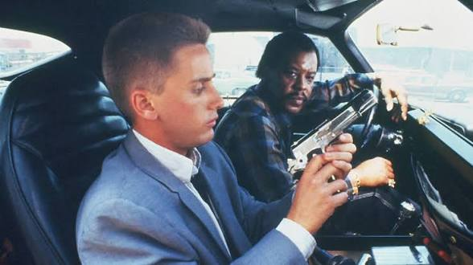

Repo Man (1984) — CERTIFIED MGC VF-30

🏛 MGC LOWER COURT OF DELIBERATION
- ASSET TITLE: Repo Man (1984)
- OFFICIAL REGISTRY GRADE: Certified MGC VF-30 (Solid Very Fine Specimen)
- PRESIDING: Judge Jane and Chief Grader MGC
- CASE FILE: #030
📜 THE INITIAL INQUEST BENCH ASSESSMENT
Under our strict 5x numismatic magnifying lens, Repo Man strikes the ledger as a wildly unique, radioactive independent alloy. It derives an immense, raw natural luster from its razor-sharp satirical script, iconic punk-rock soundtrack, and Emilio Estevez’s stellar, uncirculated performance energy. However, the planchet exhibits heavy, deliberate circulation marks. Operating on a chaotic sci-fi noir framework filled with low-budget design constraints, bizarre narrative u-turns, and a literal glowing Chevy Malibu, it experiences noticeable localized friction that anchors it firmly at a solid VF-30 on the matrix.
🚨 THE THREE SPECIFIC PLANCHET FLAWS:
1. The Narrative Dislocation Defect
- The third-act layout introduces major structural fragmentation. The sudden shift into alien government conspiracy theories and radioactive car chases introduces a chaotic pacing scuff that would terrify traditional corporate Hollywood purists.
2. The Budgetary Planchet Scuff
- Under the 5x magnifying lens, the film’s independent financial constraints leave visible physical blemishes. The practical special effects—particularly the final neon-green glowing vehicle flying over Los Angeles—exhibit heavy, charmingly unpolished production wear.
3. The Circulated Dialogue Friction
- The script alloy is intentionally filled with fragmented, highly absurd, and repetitive subcultural dialogue. While this creates an incredible cult luster for the room, it represents a clear departure from standard, polished cinematic editing parameters.
⚖️ THE APPELLATE REVIEW & REVERSAL ARGUMENTS
Judge Jane stepped straight up to the console, auditing the technical wear and issuing the following final decrees:
Motion 1 (The Absurd Sci-Fi Ending Objection)
- OVERRULED. Judge Jane rules that the chaotic, flying radioactive Chevy Malibu is a feature, not a bug! It is a massive piece of satirical genius that strips the text fat off standard sci-fi tropes. The absurdity is exactly what gives this coin its timeless, un-erasable cultural strike.
Motion 2 (The Gritty Production Blemishes)
- SUSTAINED. The Court agrees that the raw, low-budget editing cuts and localized audio engineering fatigue represent real-world circulation wear. These structural marks cap the asset at VF-30, permanently sealing it away from the pristine Mint State room.
🔍 THE FINAL DECREE & CERTIFIED JUDGMENT
The Final Executive Verdict:
By embracing its raw punk-rock impurities and distilling a completely original, un-copyable cinematic alloy, Repo Man is certified at a rock-solid MGC VF-30 Very Fine grade. The car icon is permanently engraved, the slider parameters are locked, and this highly radioactive cult token takes its rightful place right in the dead-center of the VF Registry. Case closed! ⚖️

• © 2026 MOVIE GRADING CONSENSUS. All Sovereign Rights Reserved.